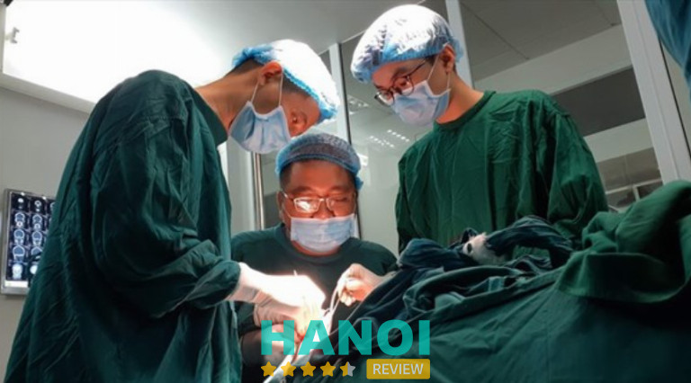
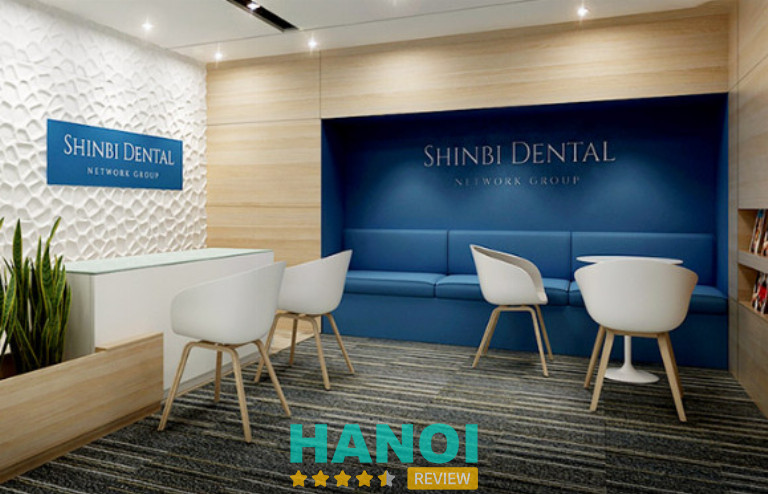
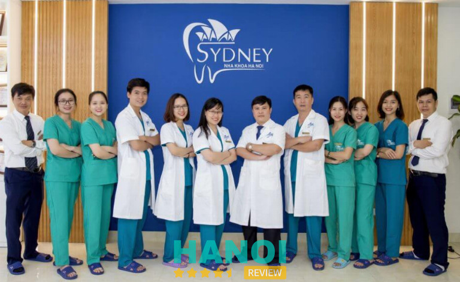
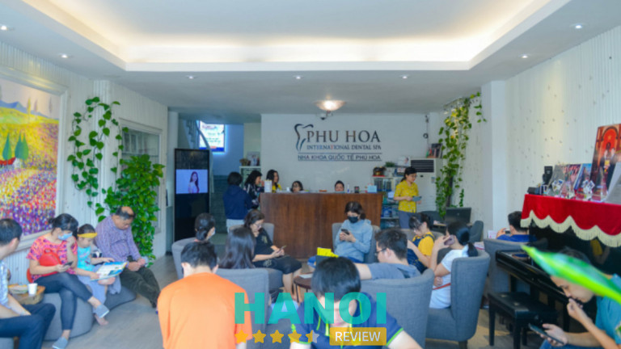
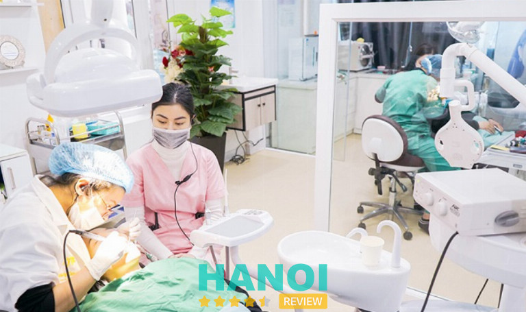
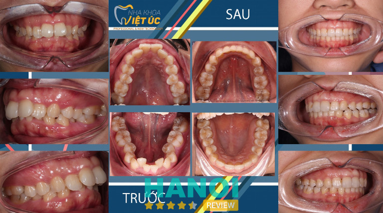
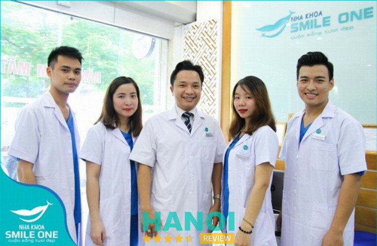
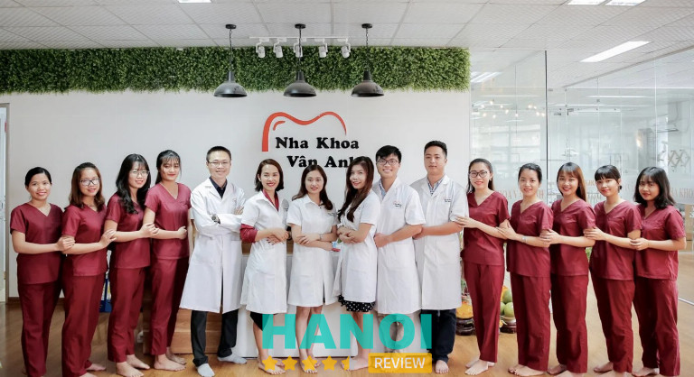

10 Địa chỉ niềng răng ở Hà Nội chất lượng tốt, giá rẻ
Hiện nay, niềng răng là phương pháp làm đẹp khá phổ biến, đặc biệt là ở một nơi có mật độ dân số đông và phát triển như Hà Nội. Nhiều người thực hiện niềng răng với mong muốn sẽ có được một hàm răng khỏe đẹp, ngay hàng thẳng lối. Vậy ở Hà Nội có cơ sở nha khoa nào niềng răng uy tín?
Cùng HaNoiReview điểm qua top 10 địa chỉ niềng răng ở Hà Nội giá rẻ nhưng chất lượng vô cùng tốt sau đây.
Top 10 địa chỉ niềng răng ở Hà Nội giá tốt, tiêu chuẩn cao
Niềng răng (hay còn gọi là chỉnh nha) là phương pháp tối ưu nhất để khắc phục những khuyết điểm như bị móm, hô, răng bị khấp khểnh, lệch lạc nhiều… giúp cho mọi người có được nụ cười thẳng đều, tươi sáng và tự tin hơn.
Ngày nay có 2 kỹ thuật niềng răng cơ bản nhất bao gồm: niềng răng trong suốt, niềng răng mắc cài (mắc cài sứ, kim loại hoặc mắc cài tự động). Dù là sử dụng kỹ thuật nào, thì mục tiêu cuối cùng vẫn là sự thẩm mỹ của răng, điều chỉnh khớp cắn cùng chức năng ăn nhai được cải thiện.
Với tình hình các nha khoa đua nhau mở ra như “nấm mọc sau mưa” ở hiện tại, việc tìm một địa chỉ niềng răng ở Hà Nội có chất lượng dịch vụ cũng như trình độ tay nghề bác sĩ cao là một điều không hề dễ dàng. Do đó, HaNoiReview đã giúp mọi người tổng hợp được 10 cơ sở nha khoa dưới đây, mong rằng nó sẽ thật hữu ích.
Bệnh viện Răng Hàm Mặt Trung Ương
Nói đến địa chỉ chuyên điều trị các vấn đề liên quan đến răng-hàm-mặt nói chung và niềng răng nói riêng, không thể không nhắc đến Bệnh viện Răng Hàm Mặt Trung Ương Hà Nội. Cơ sở này bắt đầu đi vào hoạt động từ năm 1939, có thể nói đây là một bệnh viện khá lâu đời tại Việt Nam.
Tiền thân là Ban nha khoa Bệnh viện Phủ Doãn, sau hơn 84 năm hình thành và phát triển, đến nay Bệnh viện Răng Hàm Mặt Trung Ương là một nơi khám chữa bệnh răng-hàm-mặt hàng đầu, được rất nhiều người dân không chỉ ở Hà Nội, mà còn từ các nơi khác tin tưởng ghé đến chữa trị.
Để có thể phục vụ được nhiều khách hàng, ngoài dịch vụ niềng răng chất lượng, Bệnh viện còn mở ra các dịch vụ khác như: nắn chỉnh răng, điều trị nội nha, phục hình răng, cấy ghép Implant, phẫu thuật trong miệng, nha chu, điều trị theo yêu cầu, khám tổng hợp…

Đối với dịch vụ niềng răng ở BV Răng Hàm Mặt TW, khách hàng không chỉ được trải nghiệm sự phục vụ của đội ngũ y bác sĩ chuyên nghiệp, chuyên gia hàng đầu ngành về lĩnh vực nha khoa. Mà còn được trải nghiệm các công nghệ nha khoa hiện đại như: niềng răng mắc cài tự buộc thế hệ mới, hàn ống tủy Thermafil, ghép vi phẫu chỉnh hình răng hàm mặt… Mọi thứ đều có chất lượng tốt nhất, với mục tiêu đảm bảo sự an toàn của bệnh nhân lên hàng đầu.
Đối với chi phí niềng răng, ở BV Răng Hàm Mặt TW có mức giá cũng tương đương so với tầm giá chung của các bệnh viện và phòng khám uy tín khác. Tùy vào tình trạng của răng cũng như phương pháp chỉnh nha mà khách hàng lựa chọn, bác sĩ sẽ báo giá phù hợp. Đừng lo lắng, bạn có thể tham khảo chi phí tất cả mọi dịch vụ tại bệnh viện hoặc trên trang website. Bảng giá được đăng công khai, rõ ràng. Ngoài ra khách hàng còn được sử dụng bảo hiểm y tế hoặc chọn gói niềng răng trả góp tại BV Răng Hàm Mặt TW. Điều này sẽ giúp bạn tiết kiệm được một khoản kha khá.
Trên đây là toàn bộ thông tin về dịch vụ niềng răng tại BV Răng Hàm Mặt TW Hà Nội, hi vọng rằng nó sẽ hữu ích cho các bạn khi có nhu cầu.
Thông tin liên hệ:
- Địa chỉ: số 40B Tràng Thi, Hoàn Kiếm, Hà Nội
- Điện thoại: 086 7732 939
- Website: ranghammat.org.vn
- Fanpage: FB.com/bvranghammat
Viện Công nghệ nha khoa thẩm mỹ Shinbi
Nếu bạn đang phân vân không biết chọn địa chỉ nha khoa niềng răng nào ở Hà Nội đảm bảo uy tín, hãy thử ghé đến Viện Công nghệ nha khoa thẩm mỹ Shinbi, tọa lạc tại số 33 Trần Quốc Toản quận Hoàn Kiếm.
Hoạt động với phương châm sự an toàn và hài lòng của khách hàng là món quà vô giá, là động lực để đội ngũ bác sĩ tại đây cố gắng từng ngày, mang đến hàng ngàn, hàng triệu nụ cười tươi sáng cho khách.
Người sáng lập Nha khoa là “bác sĩ quốc dân” Nguyễn Văn Hòa, được mệnh danh là “phù thủy nụ cười” với hơn 15 năm kinh nghiệm trong lĩnh vực chăm sóc và làm đẹp răng miệng. Tốt nghiệp bác sĩ chuyên khoa Răng Hàm Mặt tập huấn tại đại học Harvard, đồng thời tốt nghiệp Đại học Y Hà Nội. Bác sĩ hòa đã chăm sóc thành công cho hàng nghìn khách hàng, trong đó còn có rất nhiều người nổi tiếng.

Những lí do mà bạn nên lựa chọn Viện Công nghệ nha khoa thẩm mỹ Shinbi làm địa chỉ nha khoa niềng răng Hà Nội:
- Nơi đây tập hợp đội ngũ y bác sĩ có kinh nghiệm hơn 15 năm trong lĩnh vực chăm sóc sức khỏe răng miệng, đặc biệt chuyên môn chỉnh nha vô cùng giỏi.
- Cơ sở vật chất và hệ thống phòng khám hiện đại, tiện nghi, đảm bảo đầy đủ phòng vô trùng, khử khuẩn đạt chuẩn quy định của Bộ Y tế.
- Máy móc và trang thiết bị tân tiến, nhằm giúp khách hàng có trải nghiệm thăm khám và điều trị tốt nhất.
- Bác sĩ lên phác đồ điều trị rõ ràng, cụ thể. Khách hàng sẽ được giữ các bản hợp đồng cũng như cam kết điều trị bằng văn bản giấy, quyền lợi được đảm bảo 100%.
- Mỗi khách hàng sẽ có một bộ dụng cụ niềng riêng, được khử trùng và vô khuẩn trong lò hấp sấy tia cực tím. Các khí cụ niềng răng có nguồn gốc, xuất xứ rõ ràng, khách hàng sẽ được kiểm tra tình trạng nguyên vẹn trước khi sử dụng.
- Nhân viên tư vấn, chăm sóc khách hàng tận tình, chu đáo. Luôn lắng nghe, tôn trọng và giải đáp mọi thắc mắc của khách.
Ngoài ra, Nha khoa thẩm mỹ Shinbi cũng áp dụng chi phí niềng răng vô cùng hợp lý, thủ tục thanh toán đơn giản, nhanh gọn. Cam kết tạo điều kiện thuận lợi nhất, đem đến sự hài lòng tuyệt đối cho khách hàng.
Thông tin liên hệ:
- Địa chỉ: số 33 Trần Quốc Toản, Hoàn Kiếm, Hà Nội
- Điện thoại: 086 282 1889
- Email: info@shinbi.com.vn
- Website: shinbi.vn
- Fanpage: FB.com/Shinbi.Dental.Offical
Trung tâm nha khoa Hà Nội Sydney
Một trong những địa chỉ nha khoa niềng răng ở Hà Nội uy tín, được đông đảo khách hàng biết đến và tin tưởng lựa chọn là Trung tâm nha khoa Hà Nội Sydney. Cơ sở chuyên cung cấp những dịch vụ chăm sóc răng miệng, đặc biệt là chỉnh nha – niềng răng.
Đội ngũ y bác sĩ tại đây hầu hết đều là nha sĩ nổi tiếng về răng hàm mặt. Điển hình như Tiến sĩ Bác sĩ Hà Ngọc Chiều, đã tích lũy được hơn 20 năm kinh nghiệm trong ngành, hiện đang làm giảng viên tại Đại học Y Hà Nội. Thường xuyên tham gia khóa huấn luyện đào tạo kỹ thuật ở Pháp, Mỹ, Hàn Quốc. Vì thế mà khách hàng được Bác sĩ Chiều thực hiện điều trị sẽ vô cùng an tâm.
Trung tâm nha khoa Hà Nội Sydney sử dụng các công nghệ, thiết bị y tế tiên tiến nhất để có thể xử lý tốt các vấn đề răng miệng, đặc biệt là niềng răng. Nhằm đem đến trải nghiệm tốt nhất cho khách hàng, đồng thời có được kết quả tốt nhất, thiết bị đều có xuất xứ, nguồn gốc rõ ràng, đạt tiêu chuẩn của Bộ Y tế. Riêng khay niềng thiết kế vô cùng an toàn, không phủ latex cũng như không có chứa chất gây hại cho sức khỏe con người.

Chi phí cho dịch vụ niềng răng tại nha khoa Hà Nội Sydney vô cùng hợp lý. Tất cả đều được công khai minh bạch. Cơ sở còn có ưu đãi niềng răng trả góp 0%, giúp cho khách hàng không phải lăn tăn nhiều về vấn đề tài chính. Chính sách bảo hành sẽ tùy vào từng loại dịch vụ mà có thời gian dài hoặc ngắn. Quyền lợi của khách hàng sẽ được đảm bảo bằng hợp đồng có chữ ký từ hai phía.
Qua những ưu điểm trên, Trung tâm nha khoa Hà Nội Sydney chính là nơi khách hàng có thể yên tâm gửi gắm sức khỏe răng miệng. Nếu bạn đang có nhu cầu chỉnh nha-niềng răng, hãy ghé ngay đến nha khoa Hà Nội Sydney nhé.
Thông tin liên hệ:
- Địa chỉ: số 92 Nguyễn Chánh, Trung Hòa, Cầu Giấy, Hà Nội
- Điện thoại: 0945 747 999
- Email: nhakhoahanoisydney@gmail.com
- Website: nhakhoahanoisydney.vn
- Fanpage: FB.com/NhakhoaHanoiSydney
Nha khoa Quốc tế Phú Hòa
Nha khoa Quốc tế Phú Hòa tiền thân là Nha khoa Quốc tế Việt Đức, được thành lập vào năm 2005 bởi Tiến sĩ Bác sĩ Nguyễn Phú Hòa và một số cộng sự thân thiết với ông. Sau gần 20 năm hình thành và phát triển, phòng khám đã trở thành một nơi chăm sóc răng miệng nói chung và địa chỉ nha khoa niềng răng ở Hà Nội nói riêng vô cùng quen thuộc, được rất nhiều khách hàng tin tưởng và đánh giá cao.
Không gian tại nha khoa Phù Hòa được trang trí đầy tính nghệ thuật, hướng đến sự thân thiện, tạo cảm giác thoải mái cho khách hàng từ lúc mới đặt chân vào đây. Các loại máy móc, công nghệ hiện đại được cơ sở áp dụng cho dịch vụ niềng răng như: máy scan dấu răng Itero 5D Element, phần mềm ClinCheck software…
Không chỉ nỗ lực xây dựng nha khoa tân tiến, chú trọng đầu tư vào cơ sở vật chất và trang thiết bị hiện đại, Nha khoa Quốc tế Phú Hòa còn là nơi thu hút nhân tài, luôn tuyển chọn đội ngũ y bác sĩ là các chuyên gia đầu ngành, có kinh nghiệm lâu năm, tay nghề vững vàng. Đây là yếu tố chính, giúp cho nha khoa chiếm được lòng tin yêu của nhiều khách hàng.

Riêng dịch vụ niềng răng, cơ sở nổi tiếng với phương pháp niềng răng Invisalign tiên tiến nhất hiện nay. Đã áp dụng thành công với hàng ngàn trường hợp, trong đó còn có rất nhiều khách hàng là người nổi tiếng, như: hoa hậu Ngọc Hân, á hậu Thụy Vân, siêu mẫu Minh Triệu…
Với sứ mệnh “kiến tạo nụ cười hoàn hảo” cho mọi người, Nha khoa Quốc tế Phù Hòa luôn áp dụng các phương pháp chữa trị an toàn, mang lại cho khách sự thoải mái và hiệu quả ở mức tối đa nhất. Đây xứng đáng là một trong những địa chỉ nha khoa niềng răng ở Hà Nội có chất lượng và độ uy tín cao nhất.
Thông tin liên hệ:
- Địa chỉ: số 484 Trần Khát Chân, Hai Bà Trưng, Hà Nội
- Điện thoại: 096 209 1936
- Email: nhakhoaquoctephuhoa@gmail.com
- Website: nhakhoaquoctephuhoa.vn
- Fanpage: FB.com/nhakhoaquoctephuhoa.vn
Nha khoa Quốc tế Việt Pháp
Hiện nay tại Hà Nội đã mở ra rất nhiều nha khoa nằm đáp ứng cho cầu khám và điều trị răng miệng của nhiều người. Tuy nhiên, không phải cơ sở nào cũng chất lượng và trở thành đơn vị có uy tín để khách hàng có thể tin dùng.
Thành lập từ năm 2011, hiện nay đã sở hữu hệ thống phòng khám chuyên phục hình thẩm mỹ, chăm sóc răng miệng chất lượng tại Hà Nội nói riêng và cả miền Bắc nói chung. Nha khoa Quốc tế Việt Pháp được giới chuyên môn đánh giá là nơi cung cấp dịch vụ niềng răng chuyên nghiệp hàng đầu.
Có đội ngũ bác sĩ được cấp phép hành nghề, đồng thời 100% đều tốt nghiệp tại Đại học Y chuyên khoa Răng Hàm Mặt. Mỗi người đều tích lũy nhiều năm kinh nghiệm và có vốn kiến thức chuyên môn vững vàng. Bên cạnh đó, phòng khám còn trang bị hệ thống máy móc tân tiến như: máy CT Cone Beam 3D, máy Scan dấu trong chỉnh nha Itero 5D, máy nhổ răng siêu âm Piezotome… Tất cả đều với một mục đích đem đến những trải nghiệm tốt nhất cho khách hàng.
Nha khoa Quốc tế Việt Pháp áp dụng 3 kỹ thuật niềng răng chính, bao gồm:
- Niềng răng cho trẻ em: các bố mẹ sẽ yên tâm, bởi nhờ có công nghệ niềng răng hiện đại, bác sĩ tại nha khoa Việt Pháp có thể đưa ra các lộ trình điều trị phù hợp với độ tuổi của trẻ mà không gây bất kỳ ảnh hưởng nào đến quá trình phát triển của các con.
- Niềng răng mắc cài: có 4 loại niềng răng mắc cài, là mắc cài kim loại, mắc cài sứ, mắc cài tự buộc và mắc cài mặt trong. Khách hàng sẽ được tư vấn cũng như kiểm tra tình trạng răng, sau đó các bác sĩ của Nha khoa Quốc tế Việt Pháp sẽ giới thiệu loại mắc cài phù hợp nhất dành cho khách hàng.
- Niềng răng Invisalign: đây được xem là phương pháp hiện đại nhất hiện nay, có chi phí vô cùng đắt đỏ. Tuy nhiên các bác sĩ tại Việt Pháp khuyên những trường hợp răng mọc lệch từ nhẹ đến trung bình mới nên sử dụng.
Tùy vào mỗi cơ sở nha khoa, cũng như phương pháp niềng răng khách hàng chọn mà giá sẽ có sự khác nhau. Tại Nha khoa Quốc tế Việt Pháp, chi phí niềng răng được niêm yết rõ ràng. Giá thấp nhất là 5 triệu và cao nhất nằm trong khoảng 70 triệu đồng cho kỹ thuật niềng răng mắc cài. Đối với niềng vô hình Invisalign giá sẽ nhỉnh hơn, dao động từ 90.000.000 đồng đến 160.000.000 đồng.
Nếu bạn đang có nhu cầu tìm một địa chỉ nha khoa niềng răng ở Hà Nội, có thể thử tham khảo Nha khoa Quốc tế Việt Pháp, chắc chắn sẽ không làm bạn thất vọng.
Thông tin liên hệ:
- Địa chỉ: số 24 Trần Duy Hưng, Cầu Giấy, Hà Nội
- Điện thoại: 0363 8585 87
- Email: info.vietphapdental@gmail.com
- Website: nhakhoaquoctevietphap.com.vn
- Fanpage: FB.com/NhaKhoaQuocTeVietPhapHN/
Nha khoa Tấm Dentist
Chính thức đi vào hoạt động mới được 4 năm, nhưng Nha khoa Tấm Dentist đã nhận được khá nhiều sự ủng hộ và tin tưởng của khách hàng. Với phương châm lấy chất lượng dịch vụ và sự hài lòng của khách hàng làm tiêu chí hàng đầu, Tấm Dentist luôn định hướng sẽ hoạt động theo hệ thống phòng khám chuyên nghiệp, cam kết cung cấp một chất lượng dịch vụ tốt và trình độ tay nghề bác sĩ cao.
Tấm Dentist ưu tiên du nhập và áp dụng các kỹ thuật, công nghệ thẩm mỹ răng tiên tiến, hàng đầu thế giới. Chú trọng phát triển đội ngũ y bác sĩ bằng cách thường xuyên cho đi tập huấn, giao lưu với các đối tác ở Hàn Quốc và Mỹ, nhằm học hỏi các công nghệ mới nhất, sau đó chọn lọc và đem về áp dụng cho các khách hàng tại Tấm Dentist.
Đã được Bộ Y tế cấp giấy phép hoạt động, do đó toàn bộ những quy trình từ thăm khám, đến phẫu thuật và điều trị tại Tấm Dentist luôn đảm bảo sự an toàn tốt nhất cho khách hàng. Ngay cả thời hạn bảo hành cũng được cam kết bằng hợp đồng rõ ràng. Khách hàng sẽ không phải lo quyền lợi của bản thân bị thiệt thòi khi trải nghiệm dịch vụ ở đây.

Tấm Dentist cung cấp 5 kỹ thuật niềng năng phổ biến nhất hiện nay, gồm niềng răng mắc cài 3M UGSL, niềng răng mắc cài tự buộc 3M, niềng răng mắc cài sứ 3M, niềng răng mắc cài sứ tự đóng 3M và niềng răng Invisalign.
Với các kỹ thuật, công nghệ tiên tiến, phòng khám, phòng phẫu thuật được thanh trùng theo đúng tiêu chuẩn của Bộ Y tế, nha khoa Tấm Dentist cung cấp dịch vụ niềng răng – chỉnh nha với giá cả vô cùng hợp lý, có thể nói là khá cạnh tranh ở khu vực Hai Bà Trưng và các điểm lân cận.
Hiện nay, Nha khoa Tấm Dentist đang trở thành phòng khám và chăm sóc răng miệng tin cậy hàng đầu. Nếu bạn đang cần tìm một địa chỉ nha khoa niềng răng ở Hà Nội uy tín, Nha khoa Quốc tế Tấm Dentist sẽ là một lựa chọn mà bạn không nên bỏ qua.
Thông tin liên hệ:
- Địa chỉ: 3B Thi Sách, Hai Bà Trưng, Hà Nội
- Điện thoại: 09 6660 5600
- Email: tamdentist.vn@gmail.com
- Website: nieng-rang.com
- Fanpage: FB.com/tamdentist.vn
Nha khoa Việt Úc
Nha khoa Việt Úc được thành lập từ năm 2007, tọa lạc tại số 630 Trường Chinh. Có hơn 15 năm hình thành và phát triển, hiện nay đã trở thành nơi gửi gắm nụ cười của rất nhiều khách hàng trong nước và cả quốc tế. Là địa chỉ nha khoa niềng răng ở Hà Nội được rất nhiều khách hàng review tốt.
Toàn bộ hệ thống phòng khám của Nha khoa được thiết kế chuyên biệt, có không gian thoáng mát, vệ sinh sạch sẽ. Đảm bảo đầy đủ từ phòng điều trị, phòng phẫu thuật, đến phòng vô trùng và sát khuẩn, thuận tiện cho việc khám và điều trị, đồng thời chắc chắn an toàn sức khỏe của khách hàng. Toàn bộ máy móc sử dụng trong điều trị đều được nhập khẩu trực tiếp từ các nước uy tín hàng đầu thế giới như máy scan trong miệng Trios 3, phần mềm Smile Design, máy cắm ghép răng Implant…
Đội ngũ y bác sĩ được đào tạo bài bản, trải qua huấn luyện chuyên sâu ở các trường Y khoa nổi tiếng hàng đầu: Đại học Y Hà Nội, Đại học Harvard Mỹ, Đại học Bordeaux Pháp. Nổi bật có bác sĩ Nguyễn Mạnh Phú, đã có hơn 15 năm kinh nghiệm, chắc chắn kết quả điều trị của mỗi khách hàng đều đạt mức tốt nhất.

Đến với Nha khoa Việt Úc, khách hàng có thể lựa chọn giữa niềng răng mắc cài hoặc niềng răng trong suốt. Và quy trình chỉnh nha-niềng răng của khách hàng sẽ diễn ra theo 7 bước:
- Bác sĩ tại Nha khoa Việt Úc sẽ tiến hành khám lâm sáng miễn phí cho khách hàng.
- Sau bước khám tổng quát, bác sĩ tiến hành chụp X-quang để lấy số liệu chính xác cho việc lên kế hoạch niềng răng-chỉnh nha.
- Lập kế hoạch chỉnh nha.
- Sau khi biết kế hoạch, khách hàng sẽ được ký hợp đồng và tiến hành niềng răng.
- Sáu bước chỉnh nha, khách sẽ được lên kế hoạch tái khám định kỳ, tầm 1-2 tháng 1 lần.
- Hoàn thiện và đeo hàm duy trì từ 3 đến 6 tháng tùy vào cơ địa của từng bệnh nhân.
- Sau khi kết thúc quá trình chỉnh nha, khách hàng sẽ được tài khám kiểm tra mỗi 3 hoặc 6 tháng một lần, hoàn toàn miễn phí.
Thông tin liên hệ:
- Địa chỉ: 630 Trường Chinh, Đống Đa, Hà Nội
- Điện thoại: 097 232 8688
- Email: Nhakhoavietuc@gmail.com
- Website:nhakhoavietuc.com/
- Fanpage: FB.com/nhakhoavietuc/
Nha khoa Smile One
Nha khoa Smile One được thành lập từ năm 2001, đến nay đã đi vào hoạt động được 22 năm. Là một thương hiệu lớn, có độ uy tín cao trong lĩnh vực chăm sóc răng miệng không chỉ ở Hà Nội mà còn khắp các tỉnh thành: Bắc Giang, TPHCM, Đồng Nai. Smile One đã bảo vệ thành công cho hơn 30.000 nụ cười Việt.
Hiện nay, phòng khám đang cung cấp đa dạng phương pháp niềng răng-chỉnh nha như:
- Niềng răng trong suốt Invisalign
- Niềng răng mắc cài
- Niềng răng mắc cài mặt trong
Phòng khám Nha khoa Smile One có đầy đủ máy chụp X-quang răng, có dịch vụ vệ sinh răng miệng, điều trị viêm lợi miễn phí trước khi tiến hành niềng răng… đảm bảo quy trình an toàn cho khách hàng trước, trong và sau khi niềng.

Cơ sở còn có đội ngũ các bác sĩ chỉnh nha chuyên sâu với hơn 10 năm kinh nghiệm, đã thực hiện thành công rất nhiều ca niềng răng cho khách hàng. Đứng đầu là Thạc sĩ Bác sĩ Nguyễn Tuấn Dương, người xếp hạng Bạch Kim Platinum của Invisalign Thế giới từ năm 2019, thuộc top 3 bác sĩ đứng đầu trong lĩnh vực khay niềng trong suốt trại khu vực miền Bắc.
Ngoài ra, còn có: chuyên gia chỉnh nha-Bác sĩ Đinh Thị Yến:
- Tốt nghiệp tại Trường ĐH Y Hà Nội chuyên ngành Răng Hàm Mặt.
- Có chứng chỉ đào tạo chuyên môn về chỉnh nha,
- Đạt chứng chỉ chuyên sâu về chỉnh nha tại Viện đào tạo Răng Hàm Mặt, ĐH Y Hà Nội.
- Là thành viên của Hiệp hội Nha khoa Hoa Kỳ ADA.
- Có chứng chỉ đào tạo liên tục về Chỉnh hình Răng Hàm Mặt tại Viện Đào tạo Răng Hàm Mặt Đại học Y Hà Nội.
Quá trình niềng răng tại Smile One được các bác sĩ đưa ra lộ trình cụ thể, rõ ràng. Với trình độ tay nghề cao, kiến thức chuyên môn vững vàng, kinh nghiệm dày dạn cùng với sự hỗ trợ của các thiết bị y tế, máy móc hiện đại. Khách hàng sẽ có được kết quả tốt nhất, thời gian chuẩn xác theo kế hoạch.
Thông tin liên hệ:
- Địa chỉ: số 217 Giáp Nhất, Thanh Xuân, Hà Nội
- Điện thoại: 0869 648 601
- Website: nhakhoasmileone.vn
- Fanpage: FB.com/nhakhoasmileone.vn/
- Instagram: nhakhoasmileone.vn
Nha khoa Thúy Đức
Được thành lập vào năm 2006, Nha khoa Thúy Đức là một trong những địa chỉ niềng răng ở Hà Nội uy tín, được mọi người Việt đều tin dùng. Là cơ sở tiên phong trong lĩnh vực chỉnh nha thẩm mỹ, Thúy Đức là nơi mà mọi khách hàng đều vô vùng yên tâm về chất lượng dịch vụ cũng như trình độ tay nghề của bác sĩ.
Khi thị trường nha khoa thẩm mỹ tại Việt Nam vẫn còn khá hạn chế, nha sĩ chưa vững tay nghề. Bác sĩ Phạm Hồng Đức- con trai Tiến sĩ Phạm Văn Việt, người sáng lập ra Nha khoa Thúy Đức đã xung phong ra nước ngoài để trau dồi kiến thức về lĩnh vực chỉnh nha. Vào năm 2015, bác sĩ Đức đã trở thành người đầu tiên ở Việt Nam là thành viên của Hiệp Hội Bác sĩ Chỉnh nha Hoa Kỳ.
Bên cạnh đội ngũ bác sĩ là các chuyên gia, Nha khoa Thúy Đức còn đầu tư về cơ sở vật chất cùng những công nghệ hiện đại, nhằm mang đến hiệu quả chỉnh nha cao nhất. Nha khoa sử dụng máy móc, thiết bị vô cùng tân tiến cho dịch vụ niềng răng như: máy quét dấu răng Itero 5D Plus, máy quét dấu răng Itero 5D, máy chụp phim X-quang Vatech Pax-i…
Nha khoa Thúy Đức trang bị phòng khám vô trùng theo tiêu chuẩn của Bộ Y tế. Ngoài ra, còn sử dụng hệ thống quản lý hồ sơ bệnh án, lên lịch hẹn tự động cùng với kỹ thuật làm việc có nguyên tắc, vô cùng chuyên nghiệp.
Đến với Thúy Đức, khách hàng cũng như người thân. Từ bác sĩ đến nhân viên chăm sóc đều nỗ lực để mang lại cho khách sự an tâm và an toàn tuyệt đối. Nếu bạn đang muốn cải thiện tính thẩm mỹ của răng, có thể chọn Nha khoa Thúy Đức, cơ sở này sẽ không làm bạn phải thất vọng.
Thông tin liên hệ:
- Địa chỉ: số 64 Phố Vọng, Phương Mai, Đống Đa, Hà Nội
- Điện thoại: 093 186 3366
- Email: cskh@thuyduc.com.vn
- Website: nhakhoathuyduc.com.vn
- Fanpage: FB.com/nhakhoathuyduc64phovong/
Nha khoa Vân Anh
Được thành lập từ năm 2014, sau gần một thập kỷ hoạt động, Nha khoa Vân Anh đã mở rộng cơ sở không chỉ ở Hà Nội mà còn có ở Bắc Ninh. Là một địa chỉ chăm sóc sức khỏe răng miệng quen thuộc của rất nhiều khách hàng.
Hoạt động với sứ mệnh giúp cho khách hàng sở hữu được hàm răng chắc khỏe, nâng cao tự tin và hạnh phúc trong cuộc sống. Vì thế, nha khoa Vân Anh luôn là cơ sở đi đầu trong việc đầu tư các thiết bị, máy móc y tế hiện đại, tiên tiến nhất. Bao gồm:
- Máy scan Itero 5D: máy quét dấu răng hiện đại nhất thế giới.
- Máy CT Cone Beam: có hình ảnh 3D ưu việt giúp phân tích cấu trúc xương hàm chuẩn xác.
- Máy nhổ răng không đau Piezotome: hỗ trợ nhổ răng nhanh chóng, hiệu quả, xử lý êm các ca răng khó.

Đội ngũ y bác sĩ 100% tốt nghiệp từ các trường đại học chính quy chuyên khoa Răng Hàm Mặt. Dẫu có trình độ chuyên môn cao và nhiều kinh nghiệm, nhưng các bác sĩ tại nha khoa Vân Anh vẫn tiếp tục nâng cao kiến thức, học các khóa chuyên sâu về Răng Hàm Mặt với mục đích để khách hàng trải nghiệm được dịch vụ nha khoa tốt nhất tại Hà Nội.
Chi phí của dịch vụ niềng răng thẩm mỹ được Nha khoa Vân Anh công khai rõ ràng. Niềng răng mắc cài kim loại là kỹ thuật có mức giá tiết kiệm nhất, dao động từ 24.000.000 đồng đến 32.000.000 đồng tùy vào độ phức tạp. Kỹ thuật niềng răng mắc cài sứ cho chi phí nhỉnh hơn kim loại bởi nó đảm bảo tính thẩm mỹ hơn, giá sẽ dao động trong khoảng 33.000.000 đồng đến 43.000.000 đồng. Riêng kỹ thuật niềng răng trong suốt sẽ dựa vào thời gian niềng mà có chi phí khác nhau. Đối với niềng Techlign, giá chỉ từ 40.000.000 đồng đến 60.000.000 đồng. Đối với niềng Invisalign, dao động khoảng 70.000.000 đồng đến 130.000.000 đồng.
Qua những thông tin trên, hi vọng khách hàng sẽ có cái nhìn khách quan hơn về Nha khoa Vân Anh. Nếu có nhu cầu chăm sóc sức khỏe răng miệng, đặc biệt là niềng răng, mọi người có thể ghé đến đây, một địa chỉ nha khoa uy tín và có chất lượng dịch vụ tốt tại Hà Nội.
Thông tin liên hệ:
- Địa chỉ: 133 Nguyễn Đình Chiểu, Quận Hai Bà Trưng, Hà Nội
- Điện thoại: 0838 300 666
- Email: cskh.nkva.vn@gmail.com
- Website: nhakhoavananh.vn
- Fanpage: FB.com/phongkhamnhakhoavananh/
Tiêu chí để chọn được địa chỉ niềng răng uy tín ở Hà Nội
Niềng răng là dịch vụ thẩm mỹ răng miệng đòi hỏi một kỹ thuật vô cùng điêu luyện. Phương pháp này tác động trực tiếp lên răng, chỉnh cho răng được thẳng, đều và đẹp hơn. Ngoài ra, nó còn giúp ngăn ngừa một số bệnh lý liên quan đến răng miệng.
Trong quá trình niềng răng, nhiều người sẽ gặp phải vấn đề là nhổ răng nanh hoặc răng hàm. Điều này khiến khả năng ăn nhai của bạn bị giảm sút rất nhiều. Chính vì thế, nên lựa chọn những cơ sở có uy tín, có đội ngũ nha sĩ chuyên nghiệp.
Ngoài ra, niềng răng là tác động trực tiếp lên răng, khiến răng bị yếu hơn bình thường, dễ mắc nguy cơ tụt lợi và tiêu xương ổ răng. Vì thế, nếu lựa chọn sai cơ sở nha khoa, bác sĩ niềng răng không đúng cách, bạn sẽ phải chịu những hậu quả và ảnh hưởng rất lớn, đặc biệt là về vấn đề thẩm mỹ.
Như vậy, niềng răng ở một nơi tốt sẽ cải thiện vẻ đẹp răng miệng của bạn và ngược lại. Nhằm giúp cho lựa chọn của các bạn được chuẩn xác hơn, HaNoiReview xin chia sẻ đến bạn những tiêu chí quan trọng để tìm nha khoa niềng răng ở Hà Nội có uy tín và chất lượng tốt.
- Về cơ sở: cơ sở mà bạn chọn niềng răng phải có giấy phép hoạt động, được cấp bởi Bộ Y tế hoặc các cơ quan có thẩm quyền. Hệ thống phòng chăm sóc – điều trị phải được xây dựng rộng rãi, thoáng mát, đảm bảo vệ sinh sạch sẽ. Trang bị phòng vô trùng, khử khuẩn theo đúng tiêu chuẩn. Đó là tiêu chí để quyết định một địa chỉ nha khoa niềng răng ở Hà Nội chất lượng, và uy tín.
- Trình độ tay nghề của nha sĩ: bác sĩ sẽ là người đồng hành cùng bạn trong suốt quá trình niềng răng, là người thực hiện các kỹ thuật chỉnh nha. Kết quả răng có đẹp hay không, quá trình niềng có đảm bảo an toàn hay không hoàn toàn phụ thuộc vào chuyên môn cũng như trình độ tay nghề của bác sĩ. Bên cạnh cơ sở uy tín, cần chắc chắn bác sĩ phải giỏi thì mới ngăn được các sự cố xấu xảy ra với bạn trong và sau quá trình niềng răng.
- Thiết bị y tế: sử dụng các trang thiết bị y tế tân tiến, hiện đại sẽ giúp cho quá trình thăm khám và niềng răng diễn ra suôn sẻ, dễ dàng hơn. Một địa chỉ nha khoa niềng răng ở Hà Nội chất lượng, sẽ được tân trang đầy đủ những thiết bị hiện đại, có nguồn gốc rõ ràng. Đồng thời, các dụng cụ, chất liệu sử dụng để niềng răng cho khách luôn được khử khuẩn, tiệt trùng trước khi sử dụng. Điều này sẽ hạn chế sự lây nhiễm chéo các bệnh lý về răng miệng giữa các bệnh nhân, đảm bảo an toàn tuyệt đối cho khách hàng.
- Chi phí: nhiều người thường “nhẹ dạ cả tin” vào những lời dụ dỗ của các cơ sở niềng răng kém uy tín. Hậu quả là sức khỏe răng miệng bị ảnh hưởng vô cùng, răng còn có nguy cơ bị hư tủy nếu điều chỉnh bị hở chân răng. Do đó, cần tham khảo giá cả và chất lượng dịch vụ để xem có tương xứng với nhau hay không.
- Đánh giá từ khách hàng: đây là một tiêu chí mà mọi người nên để tâm khi đi tìm địa chỉ nha khoa niềng răng ở Hà Nội uy tín. Bạn có thể hỏi thăm người thân, bạn bè, hoặc đồng nghiệp về nha khoa mà họ từng niềng răng có ổn không. Hoặc bạn tìm kiếm trên google, truy cập vào trang website, fanpage của cơ sở đó để xem những đánh của của khách hàng từng niềng răng tại đấy. Lựa chọn các địa điểm được mọi người đánh giá cao, nhưng cũng phải sáng suốt để không chọn trúng những nơi chuyên chạy quảng cáo hoặc sử dụng hình thức PR.
Ông bà xưa có câu “Cái răng cái tóc là gốc con người”, quả thật là một điều may mắn cho những ai có được hàm răng khỏe đẹp. Song, nếu bạn không may có một hàm răng không đều cũng chẳng sao. Bài viết này HaNoiReview đã giới thiệu đến bạn 10 địa chỉ nha khoa niềng răng ở Hà Nội giá tốt mà chất lượng lại cao. Bên cạnh đó còn có các tiêu chí quan trọng để lựa chọn được một cơ sở nha khoa uy tín (phòng trường hợp bạn chưa ưng ý với những địa chỉ nha khoa mà chúng tớ đưa ra). Hy vọng các thông tin trên sẽ thật bổ ích cho bạn.
Có thể bạn quan tâm
- 10 Địa chỉ nhổ răng khôn tại Hà Nội không đau, uy tín, giá tốt
- 10 Địa chỉ bọc răng sứ thẩm mỹ tại Hà Nội đẹp, uy tín, giá tốt
- 5 Phòng khám nha khoa quận Hà Đông được đánh giá cao về chất lượng
- 5 Địa chỉ niềng răng invisalign tại Hà Nội bác sĩ giỏi thực hiện
DOANH NGHIỆP: Đăng tải thông tin MIỄN PHÍ.
Tin đọc nhiều


10 Địa chỉ nhổ răng khôn tại Hà Nội không đau, uy tín, giá tốt
Răng khôn nếu không được loại bỏ có thể gây ra tình trạng đau nhức, khó chịu dai dẳng cho bệnh nhân trong thời gian...

10 Địa chỉ trám răng thẩm mỹ tại Hà Nội uy tín, chất lượng nhất
Răng sứt mẻ hay các răng bị sâu đều nên được trám để không gây mất thẩm mỹ, đồng thời cũng là phương pháp để...

10 Phòng khám nha khoa tại Hà Nội cơ sở lớn, BS giỏi
Răng miệng khỏe mạnh là nền tảng cho sức khỏe cũng như tính thẩm mỹ. Và danh sách 10 phòng khám nha khoa tại Hà...
10 Địa chỉ cạo vôi răng tại Hà Nội sạch, không ê buốt
Ngoài các bệnh viện công lập, bạn đọc còn có thể tìm đến những địa chỉ cạo vôi răng tư nhân tại Hà Nội uy...

Trở thành người đầu tiên bình luận cho bài viết này!